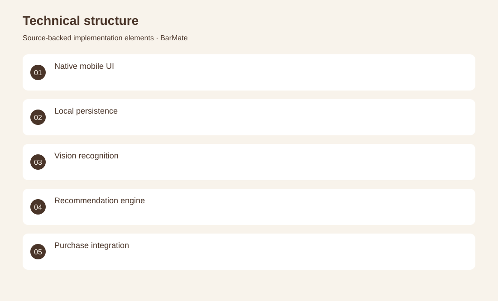
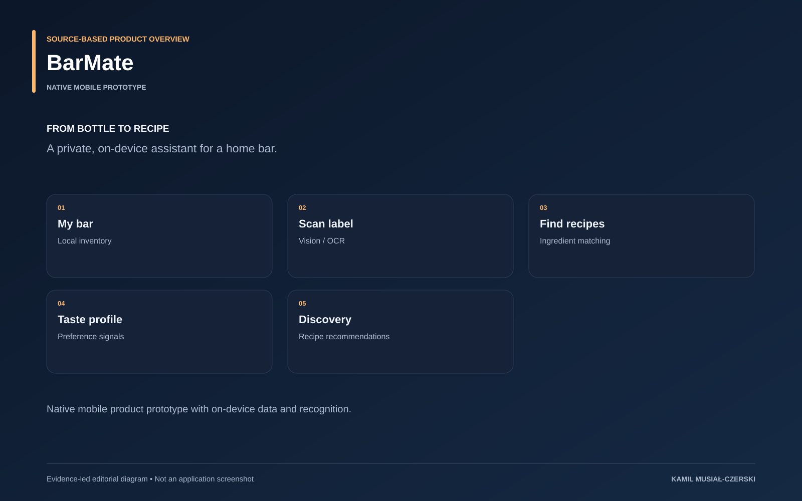

The project
The native application treats inventory, recognition and recipe selection as a single product flow. Local data models retain bottles and preferences, while recognition services and the recommendation engine help turn available ingredients into relevant suggestions. Reusable SwiftUI components provide a consistent interface across those tasks.
The problem
People need recipe suggestions that reflect ingredients they actually have and their preferences.
The solution
SwiftUI screens and local data models connect Vision-based recognition to a cocktail recommendation engine.
My contribution
Implemented native inventory and discovery workflows, local recognition services and recommendation logic.
AI capabilities
Bottle text recognition; Local classification; Preference-based recommendation
Technical structure

Product overview

The portfolio cover is an editorial illustration. No live product screenshot is presented for this project.
Showcase assets
{kind=link}
{kind=link}
{kind=link}
New portfolio identity. Newly designed marks are portfolio treatments, not claims of official client branding.